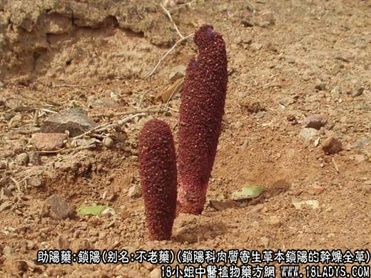
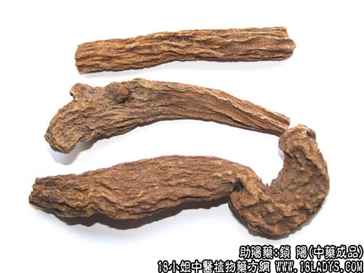
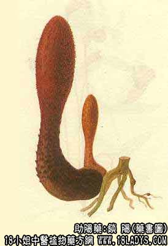

锁阳为少常用中药。始载宋庞安石著《本草补遗》。
别名：不老药、地毛球、锈铁棒、锁严子。
来源：为锁阳科肉质寄生草本植物锁阳的干燥全草，均为野生。喜生于干旱与含盐碱的沙地，常寄于蒺藜科植物白刺的根上。
产地：主产于甘肃、内蒙古、新疆，此外宁夏、青海等地亦有生产。
性状鉴别：锁阳呈圆柱形或条块状微弯曲，长8~20余厘米，直径1.5~5厘米。表面上棕色，皱缩不平，形成不规则的棱皱及沟槽。质较坚硬，不易折断，断面红棕色，肉质，显颗粒性，可见散在黄色维管束小点。气微香，味微甘咸而涩。
以体形肥大，棕红色，断面肉质性者为佳。
主要成分：含水溶性"阝"型甙、还原糖等。
功效与作用：益精状阳、润燥滑肠、养筋。
炮制：切片或切咀用。
性味：甘、微温。
归经：入肾经。
功能：补肾壮阳固精，润肠，强腰膝。
主治：阳痿早泄，血枯便秘，腰细痿弱，女子不孕等症。
临床应用：锁阳多用于阳虚肢萎，治各种瘫痪，尤其外周性弛缓性瘫痪，足膝萎弱，凡周围神经炎、脊髓神经根炎，小儿麻痹后遗症，均可用，但需配虎骨、龟板、熟地、牛膝等，方如健步虎潜丸、滋阴丸。
在治疗气虚便秘和促进性技能方面，作用和用途与肉苁蓉同，可以代替肉苁蓉，价格较便宜。其差别是：虽亦能滑肠，但不及肉苁蓉润；虽亦能兴阳，治性机能减退，但不如肉苁蓉常用。
使用注意：性欲亢进和便溏者忌服。
用量：6~15g。
处方举例：滋阴单（《证治准绳》）：炙龟板120g，黄柏、知母各60g，锁阳、杞子、五味子各30g，干姜15g，共研末，酒糊为丸如梧桐子大，每服9g，盐汤送下。